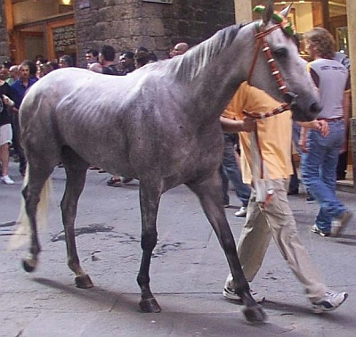

Corsi 8, vinti 3 anno di nascita: 2001 data contrada fantino 1. 2 luglio 2006 SELVA Salasso 16 agosto 2006 - - non prescelto 2. 2 luglio 2007 OCA Tittia 3. 16 agosto 2007 DRAGO Sgaibarre 2 luglio 2008 - - non prescelto 4. 16 agosto 2008 DRAGO Scompiglio 5. 2 luglio 2009 DRAGO Tittia 16 agosto 2009 - - non prescelto 6. 2 luglio 2010 SELVA Voglia 7. 16 agosto 2010 VALDIMONTONE Voglia 2 luglio 2011 - - non prescelto 8. 16 agosto 2011 GIRAFFA Brio
